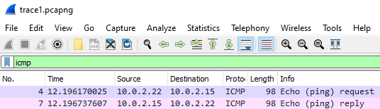
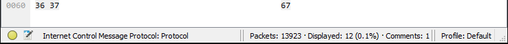
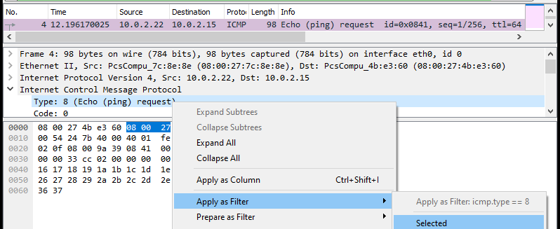
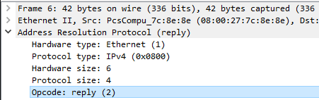
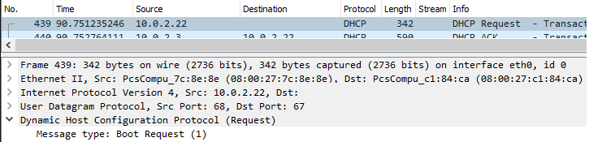
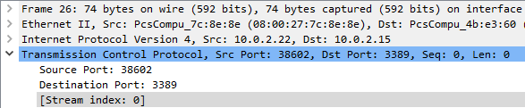
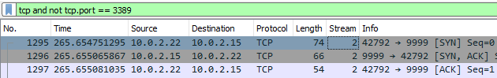
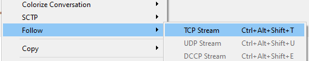
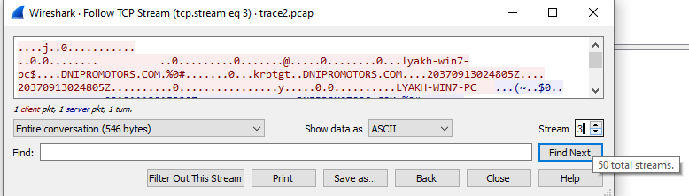
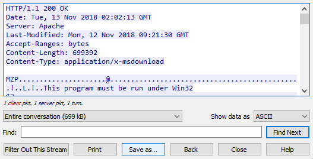

Packet traces are one way for defenders to understand what is going on in their network. Such traces are difficult to analyze due to the amount of data within them and the use of encryption to cloak their payloads. In this lab, we'll use the industry standard Wireshark tool to analyze sample packet traces.
To begin with, download and install Wireshark on your local system via https://www.wireshark.org/
Wireshark uses the pcap format to store the traces it collects. We will be analyzing two such traces in this lab. Download both traces onto the machine you have installed Wireshark on.
- Trace #1 (courtesy of Marcelle Lee): here
- Trace #2 (courtesy of https://www.malware-traffic-analysis.net/) : here
Begin by launching Wireshark and opening Trace #1. In this trace, traffic from a small network is captured that contains an unencrypted connection used by an attacker to remotely execute commands on a Windows machine. The trace itself has close to 14,000 packets in it, making any manual analysis impractical. Wireshark has many mechanisms that allow an analyst to drill down into the trace to extract information. We'll take a tour of some of the basic ones.
Wireshark allows the analyst to filter traffic based on protocol and protocol fields. Near the beginning of the trace, a set of ICMP packets are sent. Apply a display filter to only show ICMP packets by typing icmp in the UI and hitting return.

As the results show, there are both ICMP request and reply messages included. In the bottom right of the tool, the total number of packets and the number displayed by the filter are shown.

We can further restrict the packets displayed by specifying protocol fields to filter on. Rather than having to remember each protocol field name, we can click on a representative packet, find the field we want to filter on, and apply it to our filter. As an example, we'll show how to filter on ICMP Echo requests. Click on the first packet. The headers of the packet appear in the middle window and the raw payload of the packet appears on the bottom window. Expand the ICMP protocol dropdown in the middle window, find the type of the ICMP packet and right-click on it. In the menu that pops up, highlight "Apply as Filter" to see and apply the display filter to return only ICMP Echo requests.

- Take a screenshot of the results showing all ICMP Echo requests in the trace along with the display filter used to show them.
A common function we might want to perform on a trace is to list all of the network devices that are active and their hardware or MAC addresses. Using the previous techniques, perform the following.
- Apply a display filter for ARP packets (
arp) - Click on an ARP reply that includes a MAC address
- Expand out the ARP reply in the middle window and apply a filter that displays only ARP replies

Answer the following questions:
- What is the display filter that has been applied?
Based on the ARP replies, there are 4 different hosts on this network.
- List the IP addresses of each host and its corresponding MAC address.
While Let's Encrypt and the ubiquitous use of transport-layer security (TLS), has enabled much of the Internet's traffic to be encrypted, there are many protocols that still use unencrypted payloads. Furthermore, adversaries using netcat to implement backdoors or legacy protocols to maintain access may also have unencrypted payloads. In this step, we'll look at a variety of payloads from protocols that do not employ TLS.
DHCP allows hosts to obtain a dynamic address when joining a network. At the end of the DHCP protocol, clients wishing to obtain an address send a DHCP request packet to a DHCP server on the network that the server then acknowledges. In Wireshark, add a display filter looking for dhcp. A host on the network makes a request to the DHCP server. Click on the request and in the middle window, expand out the request packet to find the hostname of the machine making the request in its options.

- What is the IP address of the DHCP server?
- What is the IP address assigned and the hostname of the machine making the DHCP request?
DNS queries can also be sent as unencrypted UDP packets. Apply the display filter of dns to examine the requests within the trace being made. Answer the following questions:
- What DNS record type and DNS name are being requested?
- What is the IP address of the local DNS server the request is being made to?
The server message block (SMB) protocol is used for implementing network file shares for Windows machines. It also uses unencrypted UDP to advertise hosts with files to share. Apply the display filter smb to view the SMB traffic being sent.
- What is the name of the host being broadcast?
When a connection uses TLS, it will not be possible to analyze its payloads (aside from the setup messages). To begin with, apply the display filter tcp to show all TCP packets. At the beginning of the trace is a TCP connection that establishes a TLSv1 session on top of the connection for communication. Click on the first packet and in the middle window, expand out the TCP header. Within the header, Wireshark assigns a "Stream index" to packets in order to group packets together that belong to the same connection. Since this is the first TCP packet of the trace, it is given a Stream index of 0 as shown below.

The destination port that the packet is being sent to is 3389. Look up what commonly runs on this port.
- What kind of session does this connection carry?
Apply the display filter tcp.port == 3389.
- What percentage of packets in this trace carry traffic of this kind?
One of the convenient aspects of display filters is the ability to use logical expressions to further zero-in on particular network traffic. Suppose we want to ignore all TCP traffic going over 3389 since they have encrypted payloads. Applying a display filter of (tcp and not tcp.port == 3389) does so. Apply the filter.
- How many TCP packets remain? Do any of them carry encrypted TLS traffic?
The Stream index allows us to group packets that are part of the same connection. For the TCP connections that remain in the prior step, click on the first one and find its Stream index. We can add this value as a column in the top window. Right-click on the index, and select "Apply as column" to add a column label indicating a packet's Stream index.

You should something similar to below:

One of the more useful functions to have is the ability to reconstruct the application payload from the individual packets that are sent on a TCP connection. To do so in Wireshark, right-click a packet in Stream index 2 and follow its TCP stream.

- Take a screenshot showing the reconstructed payload of this connection
Using the techniques from the prior steps, reconstruct the TCP connection with index of 5. As the reconstruction shows, this is an unencrypted Windows command shell session that the adversary is using to gather information on a target.
- From the netstat output, what services are running on the first two TCP ports in the LISTENING state?
- Take a screenshot of the Excel (.xls) files that have been discovered.
Bring up Trace #2 in Wireshark. Examine the initial 10 packets of the trace and answer the following questions:
- What is the IP address and name of the Windows Desktop machine on this network? What Windows domain is it attempting to register on?
- What is the IP address of the local DNS server and domain controller?
Add the Stream index column to the UI as in the previous trace. Right click a TCP connection and "Follow" the TCP Stream. As part of the UI, one can easily switch between stream indices using the UI in the interface.

Use the UI to switch between streams, then find the Kerberos authentication connections in Streams 35-37. Examine the payloads.
- What username is attempting to authenticate?
When analyzing traces, one might come across a malicious file being downloaded and executed, such as Ransomware. It is useful to be able to reconstruct such files and then check them against services such as VirusTotal to see if they are malicious and determine what they might have done on an infected system. The user is tricked into downloading an .exe file. Use the display filter to find all HTTP connections in Trace #2 and find the connection that performs this download. Expand out its headers.
- What is the Full request URI of the downloaded file?
Follow the TCP stream. View the response headers.
- What are the
Content-Length:andContent-Type:of the response?
The UI shows that the payload returned appears to be a Windows executable. We can have Wireshark reconstruct the file and save it. At the bottom of the interface, click on "Save as.." and save the file into "vez.exe".

It's never a good idea to execute an unknown executable. Fortunately, there are many skilled malware analysts that are willing to do so and report back on whether or not the executable was malicious. One site that does so is VirusTotal. Visit https://virustotal.com and upload the vez.exe binary to it. Dig into the "Details" of what has been found.
- Based on what you find, explain why you think the executable is or is not malicious.
Immediately following the download of vez.exe, the Windows machine makes two outgoing connections that fail. If these are a result of the downloaded binary, then investigating the intended destination of the connections may provide us information about whether it is malicious or not. Go back to the TCP Stream that downloaded vez.exe. Find the next two TCP streams and see the connection attempts being made.
- Which IP address does the machine attempt to connect to after the download?